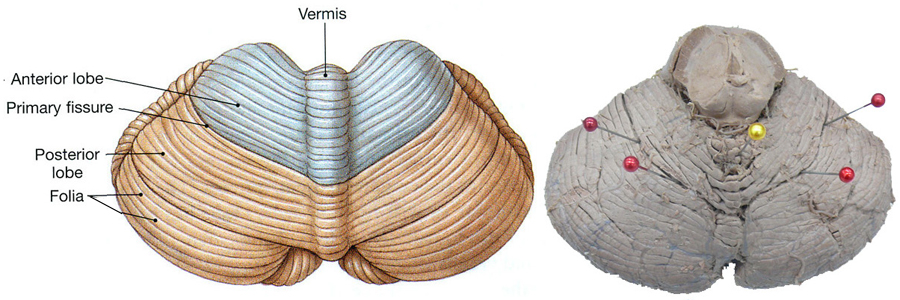
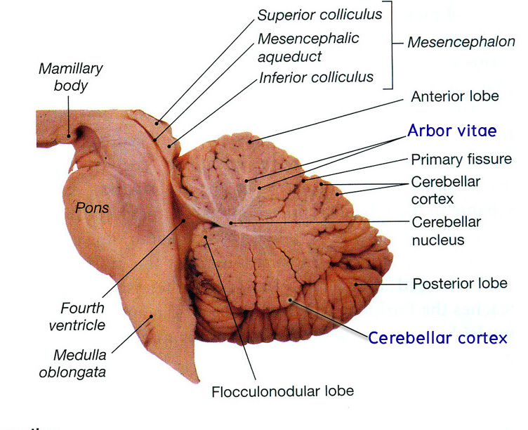
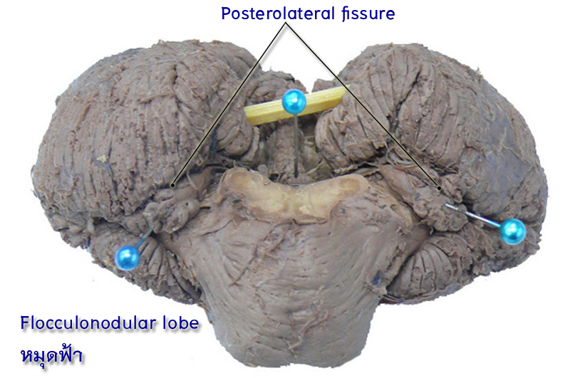
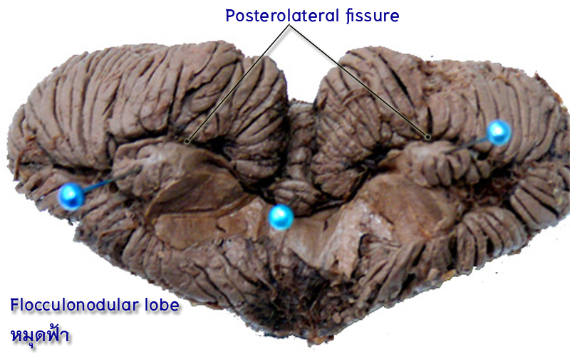

Gross anatomy
นำสมองเต็ม และสมองน้อยผ่าซีก มาชี้แสดงส่วนต่าง ๆ ของ cerebellum ประกอบ atlas ดังนี้
Parallel folds ที่เรียกว่า folia ซึ่งพบว่าอาจถูกแบ่งออกได้เป็น 5 ส่วน ตามแนว sagittal plane ดังนี้

- Vermis เป็นสันนูนในแนวกลาง ซึ่งทางด้าน inferior เห็นลักษณะคล้ายตัวหนอนอยู่ที่ก้นของซอกลึกที่เรียกว่า vallecula ซึ่งถูกขนาบสองข้างโดย cerebellar hemispheres
- Intermediate or paravermal part of hemisphere เป็นแถบแคบๆขนาบสองข้าง vermis
- Lateral part of hemisphere เป็นส่วนใหญ่ของ cerebellar hemisphere ที่อยู่ถัดจาก paravermal part ออกไป
- Nodule of vermis
- Flocculus of cerebellar hemisphere
- Posterolateral fissure ซึ่งเป็นร่องลึกที่แยก nodule of vermis และ flocculus of cerebellar hemisphere ออกจากจากส่วนที่เหลือของ cerebellum ซึ่งเรียกว่า corpus cerebelli
- Primary fissure ซึ่งเป็นร่องลึกบน superior surface of cerebellum ที่แบ่ง corpus cerebelli ออกเป็น anterior และ posterior lobes
- White matter of cerebellum ที่มีลักษณะเหมือนต้นไม้แคระที่เรียกว่า arbor vitae
- Cerebellar cortex ซึ่งเป็น gray matter ที่แผ่คลุมผิวของ cerebellum

Subdivisions of cerebellum
Anatomical subdivisions
ศึกษา schematic drawing of superior and inferior surfaces of cerebellum เพื่อเรียนรู้การแบ่ง cerebellum ออกเป็นส่วนต่าง ๆ ตามแนว sagittal plane และเป็น lobes ต่าง ๆ ตามแนว transverse plane

